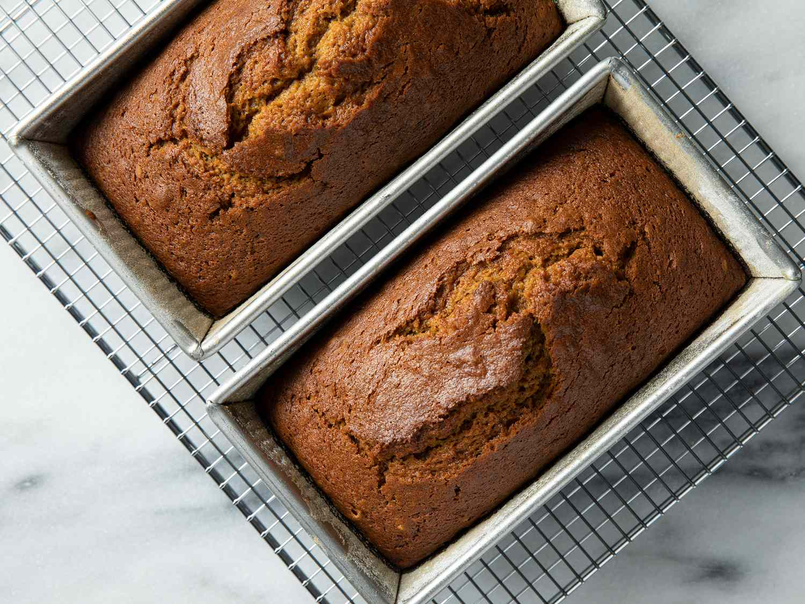

Back
Downeast Maine Pumpkin Bread

Ingredients
- 1 (15-ounce) can pumpkin puree
- 4 large eggs
- 1 cup vegetable oil
- ⅔ cup water
- 3 cups white sugar
- 3 ½ cups all-purpose flour
- 2 teaspoons baking soda
- 1 ½ teaspoons salt
- 1 teaspoon ground cinnamon
- 1 teaspoon ground nutmeg
- ½ teaspoon ground cloves
- ¼ teaspoon ground ginger
Directions
-
Gather the ingredients. Preheat the oven to 350 degrees F (175 degrees C). Grease and flour two 9x5-inch loaf pans.
Overhead view of ingredients to make pumpkin bread.
-
Whisk flour, baking soda, salt, cinnamon, nutmeg, cloves, and ginger together in a large bowl.
Overhead of a flour, baking soda, and cinnamon mixture in a bowl.
-
Whisk pumpkin purée, eggs, oil, water, and sugar together in a separate large bowl until smooth and well combined.
A bowl with pumpkin pruree mix.
-
Stir the flour mixture into the pumpkin mixture just until no dry streaks remain; do not overmix.
Overhead of a pumpkin batter resting in a bowl.
-
Divide the batter evenly between the prepared loaf pans.
Overhead of a pumpkin batter being poured into three bread pans.
-
Bake in the preheated oven until a toothpick inserted into the center of each loaf comes out clean or with a few moist crumbs, about 50 minutes
Overhead of two baked pumpkin breads cooling on a wire rack.
- Cool the loaves in their pans for 10 minutes. Run a thin knife around the edges, then turn the loaves onto a wire rack to cool completely before slicing or wrapping.
Nutrition Facts
(per serving)
- 263 Calories
- 10g Fat
- 41g Carbs
- 3g Protein